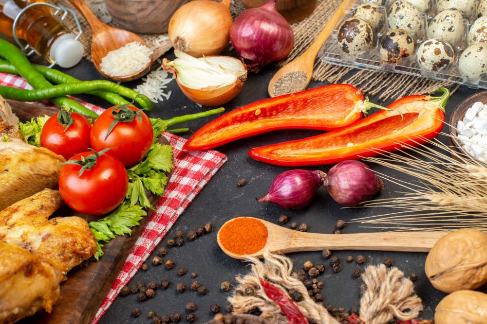

Historia
El pesto es una salsa tradicional originaria de la región de Liguria, en Italia, especialmente de la ciudad de Génova. Su nombre proviene del verbo italiano “pestare”, que significa machacar, ya que originalmente se preparaba en mortero. Es una de las salsas más representativas de la cocina italiana.
Ingredientes

Los ingredientes principales son espaguetis, hojas frescas de albahaca, piñones, ajo, queso parmesano o pecorino, aceite de oliva y sal. Opcionalmente, se puede añadir un poco de pimienta. Estos ingredientes se trituran para formar una salsa verde aromática y suave.
Preparación
Primero, se cuecen los espaguetis en abundante agua con sal hasta que estén al dente. Mientras tanto, se prepara la salsa pesto triturando la albahaca, los piñones y el ajo, añadiendo poco a poco el aceite de oliva hasta obtener una mezcla homogénea. Después, se incorpora el queso rallado y se mezcla bien. Una vez cocida la pasta, se escurre y se mezcla con la salsa pesto, añadiendo un poco del agua de cocción si es necesario para ligar la salsa. Se sirve inmediatamente.